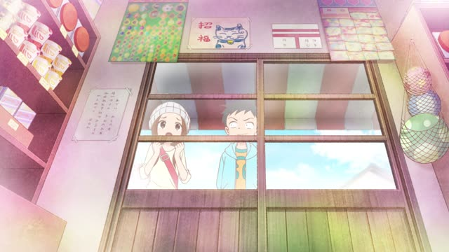

～前に

YouTube · video
あの〜、海外旅行に行く前に、絶対にこの場所に行きます。
"Um, before I go on a trip abroad, I always come to this place."
前に means before. It goes right after a verb in dictionary form: 行く + 前に = "before going". With a noun, add の: 旅行の前に = "before the trip".
On this card, it answers "when do you do that?": first comes the thing you do, the 前に part is the moment it happens before.
The verb before 前に never changes, polite or casual. Only the end of the sentence does: 行きます / 行く.

YouTube · video
えっと、工事を始める前にこの現場を視察しておこう。
"Okay, before we start building, let's check out the site."
Same 始める + 前に, casual ending (しておこう). In casual speech the comma after 前に is often just a tiny pause, or nothing.
Quick Examples
Your kid is heading to bed.
寝る前に歯を磨いて。
"Brush your teeth before you go to bed."
CasualSomeone asks how long you studied before moving to Japan.
日本に来る前に、二年勉強しました。
"I studied for two years before I came to Japan."
Even when it's all in the past, it's 来る前に, never 来た前に. The verb before 前に stays in dictionary form.
PoliteA coworker asks where you got your coffee.
会議の前に買いました。
"I bought it before the meeting."
会議 is a noun, so it needs の: 会議の前に.
PoliteA friend is about to leave your place.
帰る前に、これ食べない？
"Want to eat this before you head home?"
CasualWith and without
手を洗って、ご飯を食べる。
"I wash my hands and eat." Two things, in the order they happen.
ご飯を食べる前に、手を洗う。
"Before I eat, I wash my hands." Same order in real life, but now eating is the moment, and washing is what you do first.
Examples from Media

YouTube · video
はい、鳥居に入る前に..。
"Okay, before we go through the torii gate..."
The clip stops at 前に, so you hear the pattern on its own. He goes on to say what to do first.
Quartet · Episode 8
ごはんの前に。
"Before dinner."
Noun + の + 前に.

Teasing Master Takagi-san · Season 2, Episode 3
満開の桜を見る前に—。
"Before seeing the cherry blossoms in full bloom..."
見る + 前に: the dictionary form, always.
Goblin Slayer · Episode 8
正気に戻る前に逃げる。
"We run before they come to their senses."
Kotaro Lives Alone · Episode 10
わらわが生まれる前に。
"Before I was born."
わらわ: Kotaro's old-fashioned "I". Even for the past, 前に takes the dictionary form.
Slam Dunk · Episode 95
飯の前に。
"Before dinner."
飯: a rough ご飯.

Shirokuma Cafe · Episode 36
寝る前に嫌なこと言うんじゃねえよ。
"Don't say nasty stuff right before bed."
Dictionary form + 前に.

Shirokuma Cafe · Episode 29
つける前に気づいてよ。
"Notice that before you stick them on."
Dictionary form + 前に, even when the action is past.
Further Reading
A Dictionary of Basic Japanese Grammar
Entry "mae ni" · pp. 231–233